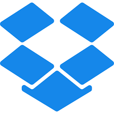

Softwares que usam python como linguagem base
1.Dropbox
|  | Dropbox é um serviço para armazenamento e partilha de arquivos. É baseado no conceito de "computação em nuvem". Ele pertence ao Dropbox Inc., sediada em San Francisco, Califórnia, EUA. A empresa desenvolvedora do programa disponibiliza centrais de computadores que armazenam os arquivos de seus clientes. fonte: Wikipedia |
2.YouTube
 |
YouTube é uma plataforma de compartilhamento de vídeos com sede em San Bruno, Califórnia. O serviço foi criado por três ex-funcionários do PayPal - Chad Hurley, Steve Chen e Jawed Karim - em fevereiro de 2005. fonte: Wikipedia |
3.Google
| fonte: Wikipedia |